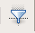
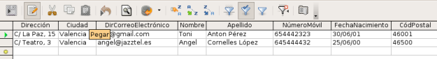
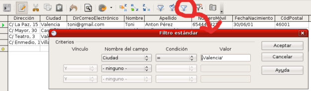

En determinadas ocasiones, nos puede interesar mostrar sólo ciertos
registros de la tabla pero sin complicarnos demasiado la vida con la
consulta. La forma más sencilla de hacerlo es utilizar la herramienta Autofiltro.
Con ella conseguiremos mostrar en la ventana de datos sólo aquellos
registros que coincidan en el valor de un campo con el seleccionado.
Bases de Datos
3.3.5. Autofiltro
Práctica Guiada
- Utiliza la base de datos Amigos y abre la tabla listadoAmigos en el modo vista de datos. Recuerda que es suficiente con hacer doble clic sobre el nombre de la tabla.
- Selecciona algún registro donde el valor para el campo Ciudad sea Valencia.
- A continuación haz clic en el botón Autofiltro .
- En la ventana de datos de la tabla sólo aparecerán aquellos registros correspondientes a amigos de la ciudad de Castellón como muestra la figura siguiente.

Para recuperar el aspecto original de la tabla y mostrar de nuevo todos
sus registros, haz clic en el icono Eliminar filtro/orden  .
.
Existen modos de filtrados más potentes, concretamente la herramienta Filtro estándar permite muchas más posibilidades como se puede observar en la siguiente figura.
